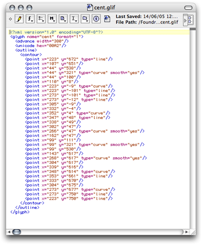
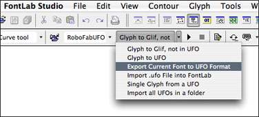

Adventures in NoneLab, scripting outside the box

Working with text sources UFO, and GLIF's. Fontlab export and import of UFO. Processing UFO's outside FontLab.
Previous: Scripting for production, next: Dialog Kit
UFO
Scripting a font editor without the font editor? RoboFab can export and import to the text based UFO format for font sources. You can export a FontLab font to .ufo, and you can import a .ufo to FontLab easily. Read the how-to. UFO export and import scripts are available from the RoboFab Scripts menu. But what do you do with ufos then?
Scripting with fonts outside FontLab
The nice thing about UFO is that RoboFab can read the files even when it is not running in FontLab. The Python interpreter that you use for FontLab, can run RoboFab scripts and apply them to font and glyphs stored in a UFO rather than a .vfb. That opens possibilities for batch processing, storage in databases or version management systems, archiving or connecting your own tools to your workflow. FontLab specific functionality, such as generating font binaries, and complex path manipulations are not available in the NoneLab RoboFab, but you can make fonts, create and move glyphs, generate and manipulate kerning. We've taken great care to make sure that RoboFab based scripts work in both worlds.
NoneLab
NoneLab is a word we coined to describe Robofab/Python environments outside FontLab. Let's have a look at main the differences.
| FontLab | NoneLab | |
| Font binary generation | All formats. Import, export UFO. | Read, write UFO. Read TT, OTF, PS T1 (through fontTools). Experimental support for SVG fonts. |
| CurrentFont, CurrentGlyph, AllFonts | Yes | No. Use OpenFont(aPathToUFO) instead, or open the .ufo fonts with RFont(aPathToUFO) |
| Interpolation | Yes | Yes - quite a bit faster too. |
| Make new fonts, move glyphs, merge, split files | Yes | Yes |
| Build accented glyphs | Yes | Yes |
| Manipulate kerning | Yes | Yes |
| Remove overlap | Yes | No |
| API | All Robofab objects. Plus the underlying FontLab objects. | All Robofab objects. |
| Platform | Mac OSX, Windows, within FontLab | All platforms which support Python, Mac OSX, Windows, Linux, Unix |
| Open file format | No, .vfb is a proprietary, binary file format. | Yes. UFO and GLIF formats are XML based, open and documented. You can build your own tools and use these formats. |
| Widgets, UI toolkit | DialogKit, plus the set of basic windows from robofab.interface | When run as a window-less user in OSX or linux the interface things are disabled. In some Python IDE's: the set of basic windows from robofab.interface. On OSX: Vanilla. |
The UFO
A UFO is not really a single file, but rather a whole folder full of stuff with a .ufo extension in the name. So you can open up a .ufo and have a look inside. Some data is stored in .plist format. This is a flavor of XML and contains kerning, lib and font info. The glyphs are stored level deeper, in the glyphs folder.

The MyFont.ufo/glyphs/ folder contains a list of .glif files and a single contents.plist file. This is the table of contents for the folder, it contains a table of glyph name to file name mappings. So when you start working with a .ufo and you want a particular glyph, Robofab can find it faster.
The GLIF
GLyph Interchange Format, a readable XML based file with all data for a single glyph: width, unicode value, all contours, points and components. The glyph.lib is also stored here.
These screenshots are taken on an OSX machine, but the data is platform independent. Basically you can take any text editor and mess around with the points. While this is not a very efficient way to design type, it shows that the data is still there, accessible forever.
Exporting UFO
In the FontLab scripts folder that is distributed with Robofab, you will find a set of scripts for importing and exporting UFO and GLIF. Open a test font and run this script from the Macro menu. It will generate a .ufo in the same folder as the source font file.

FontLab Remote
If you happen to be using FontLab in mac, you can use the FontLab Remote module to make FontLab receive Python instructions and data by AppleEvents. You need to start the AppleEvent handler by importing the robofab.tools.remote module. After importing it, FontLab can receive instructions by AppleEvent. You need to call remote once after starting FontLab. Now external scripts running outside FontLab can call the FontLab application, send it glyphs, get results back.
# start the AppleEvent handler
import robofab.tools.remote
FontLabRemote is on.
The following script needs to be run in a python IDE. It will ask FontLab for its current glyph, and then it will store this glyph in a new font object outside FontLab.
# robothon06
# demo of executing python in FontLab, MacOS only
# this script runs in the Python IDE
# it will send some python code to FontLab
# FontLab will execute the python code:
# it will find the current glyph and send it to our other script.
from robofab.tools.remote import runFontLabRemote, receiveGlyph
from robofab.world import RFont
# this is what we want FontLab to do:
pythonCode = """
from robofab.world import CurrentGlyph
from robofab.tools.remote import transmitGlyph
g = CurrentGlyph()
transmitGlyph(g)
"""
# this the font where we'll store the glyph from FontLab
destFont = RFont()
result = runFontLabRemote(pythonCode)
receiveGlyph(result, destFont)
print destFont.keys()
<RGlyph for None.parenright>
['parenright']